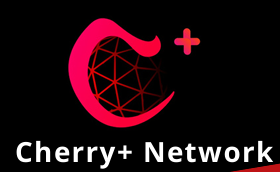
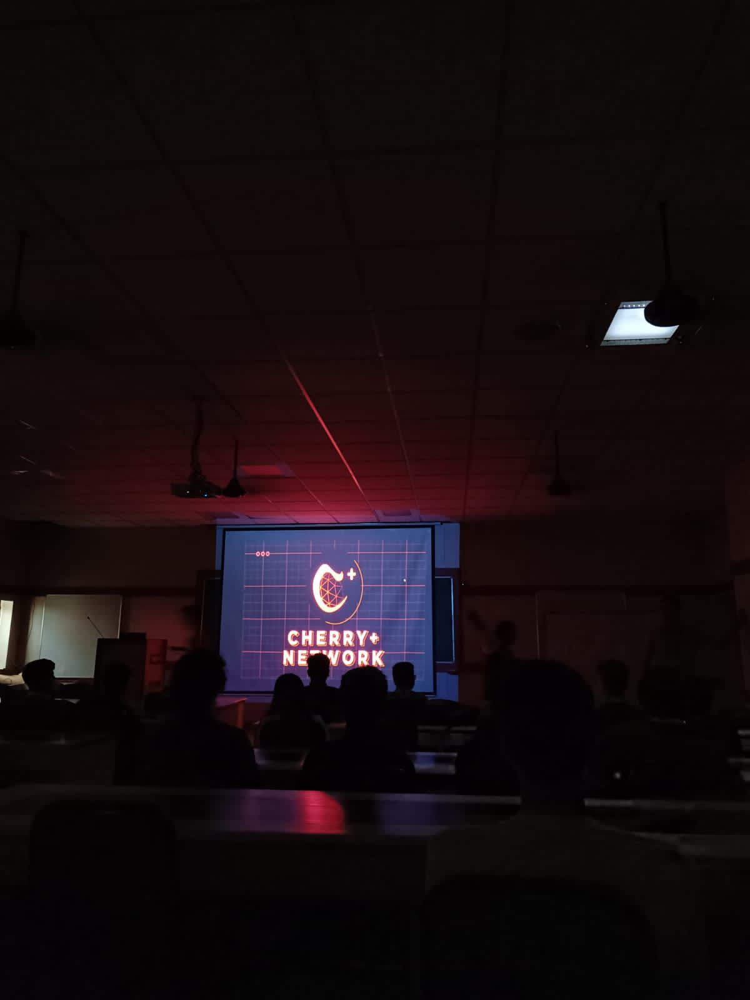
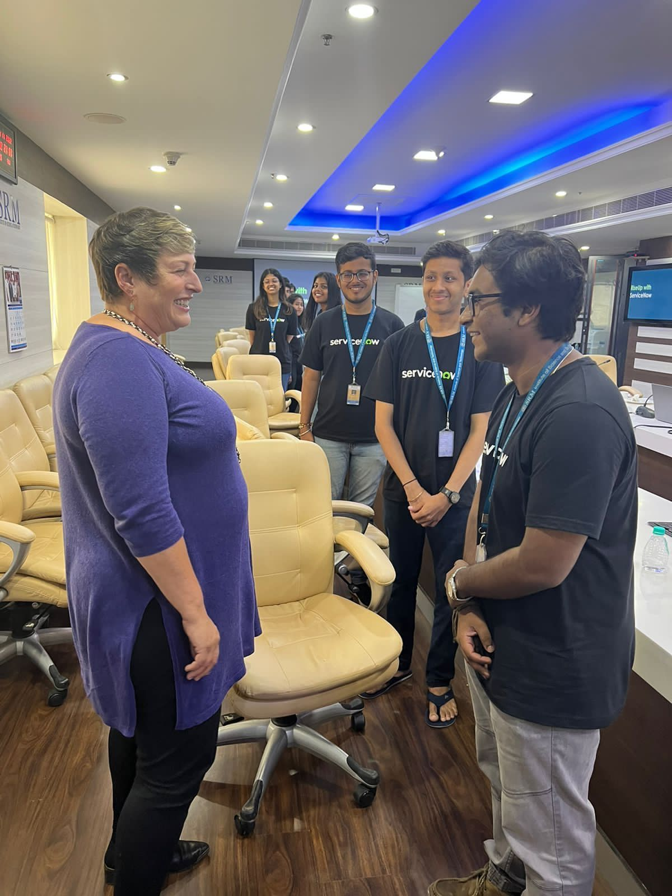
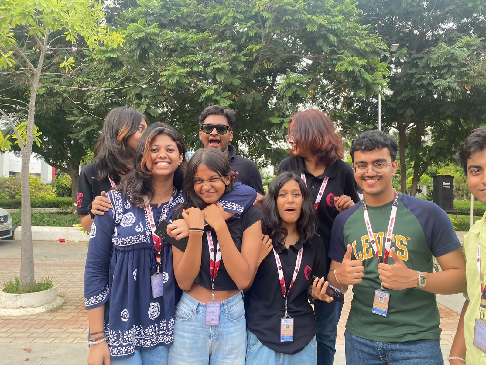
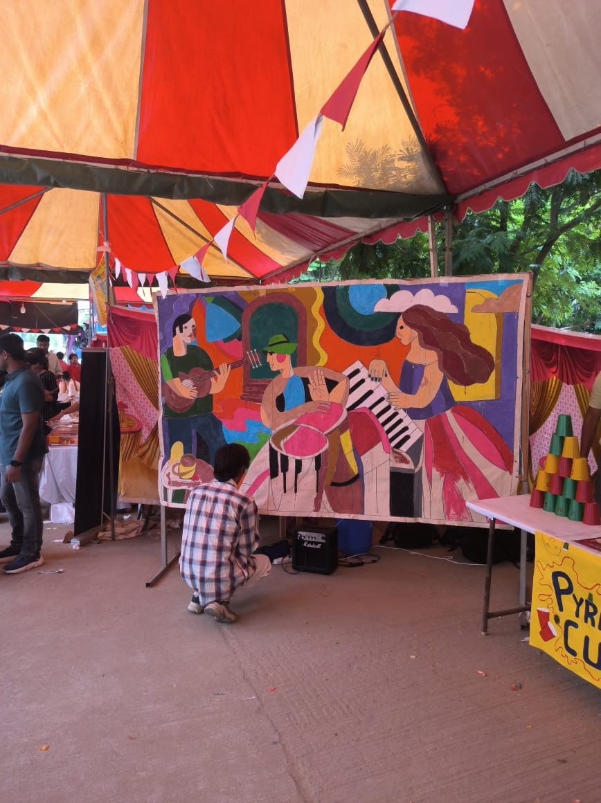
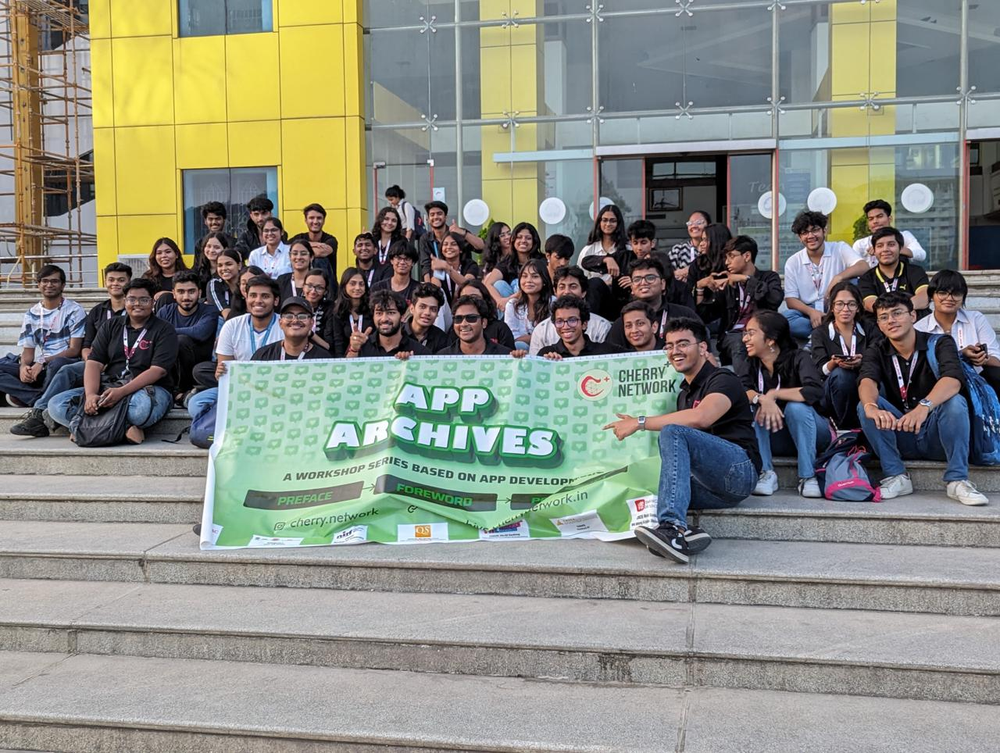
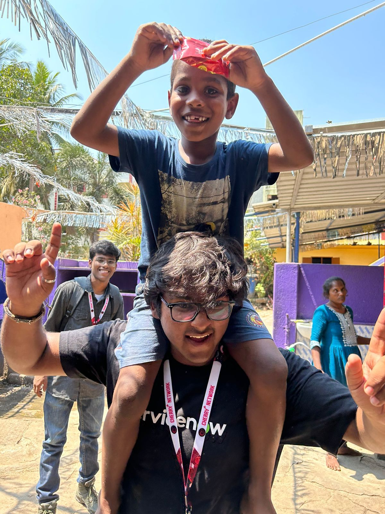
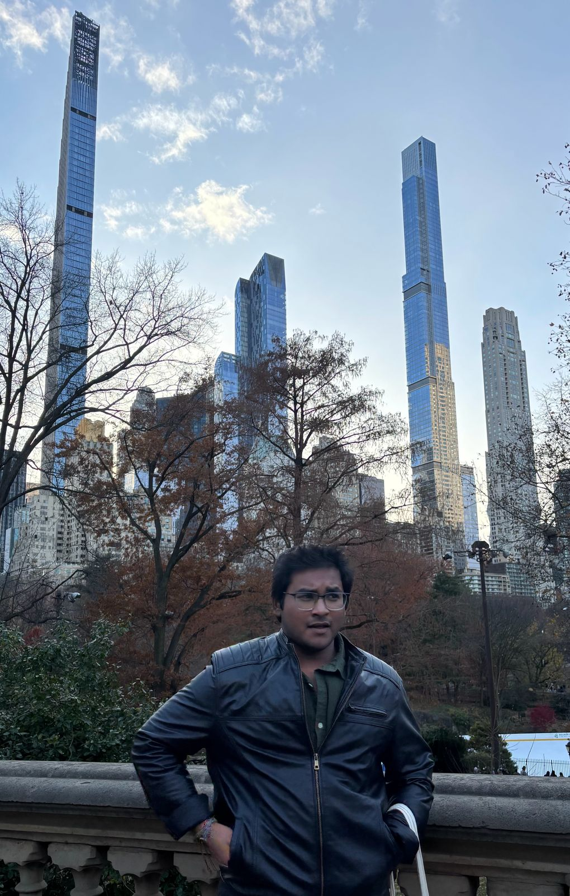

My greatest leadership experience. A community that taught me more than I taught it.
Built from solitude. Shaped online. Tested physically. Reborn in purpose.
GENESIS — The Digital Spark (2021)
Online semester sparked a need for connection and execution.
Started a Discord server to organize curious, high-energy students.
Built first systems, roles, and rituals — fully remote.

PHASE I — Editorial Director

Designed the complete brand kit: voice, identity, and narrative rules.
Established editorial and design systems to ship consistently.
Turned creativity into a framework; strategy into expression.
THE CRASH — The Turning Point
Digital → physical transition clashed with institutional constraints.
A planning slip caused disputes and a hit to morale.
We paused, reflected, and recommitted to rebuilding — properly.
PHASE II — Corporate Director

Recruited a new core team around clear roles and outcomes.
Rebuilt operating systems and cadences from zero.
Rebranded culture with standards for quality and ownership.
Revamped execution — every brick placed with intent.
PHASE III — Innovations Director

Launched high-impact creative programs and talent pipelines.
Brought structure to chaos — templates, briefs, and review loops.
Evolved the visual system — more aesthetic, more strategic.
ATARAXIA — Reaching 25,000+ People

Peak event: reached 25,000+ students across campus.
Food courts, art exhibits, and creative arenas working in sync.
Operations, PR, and production run as one integrated system.
PHASE IV — Chief Operations Officer (COO)

Scaled systems across teams; introduced KPI dashboards.
Built repeatable ops frameworks and playbooks.
Transitioned Cherry+ into a structured, accountable organization.
COMMUNITY OUTREACH — Orphanage Programs

Designed activity-led learning days for kids.
Coordinated volunteers, logistics, and donations transparently.
Kept impact measurable — participation, materials, and outcomes.
TODAY — Mentor, From New York City

Mentor the leadership council remotely — weekly cadences.
Share frameworks: decision trees, comms kits, and review ladders.
Leadership doesn’t need proximity — it needs intention.